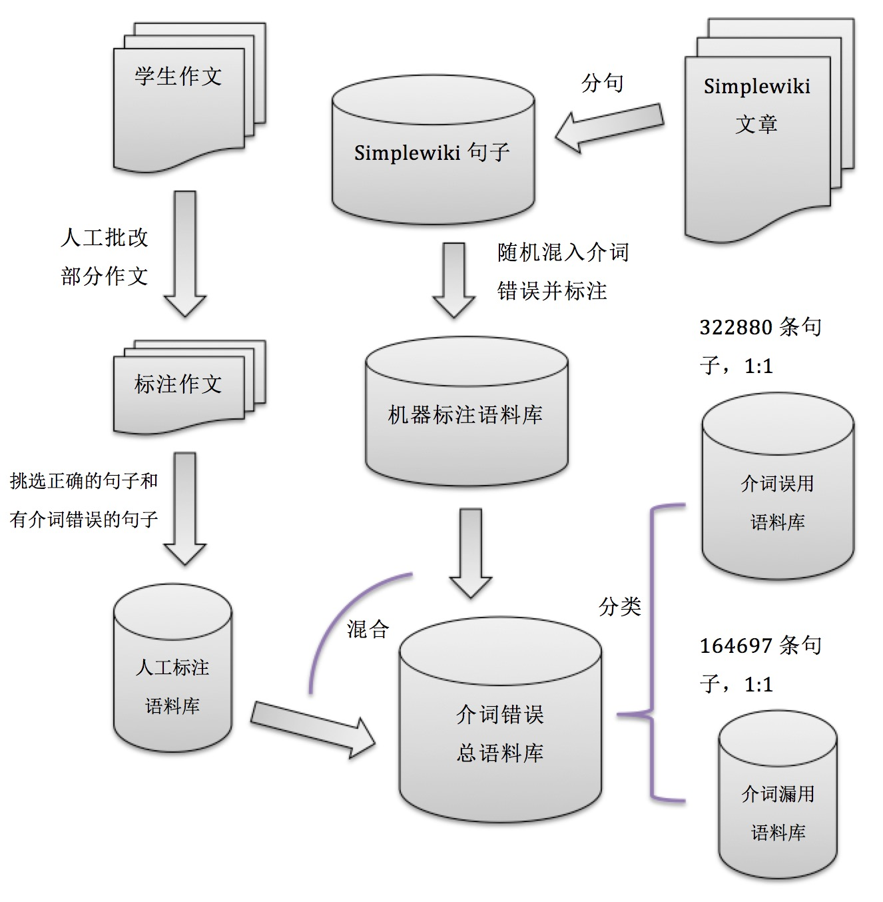
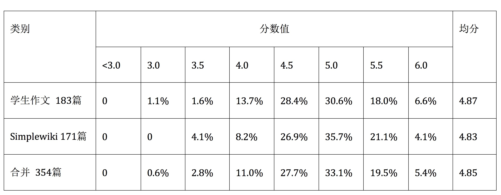

英语作文的自动批阅
自动评分与典型错误的识别
答辩内容
- 课题概述和意义
- 方案概述和系统框架
- 功能实现与实验结果
- 研究结论
- 系统演示
- Q&A
一、 课题概述和意义
基本概念
英语作文自动评阅是计算机辅助英语写作教育的一种形式。
- 作文自动评分
- 典型错误识别
研究意义
- 课堂资源的补充
- 教学重心的转移
- 考试批阅的辅助
- 学生练习的激励
二、 方案概述和系统框架
实施方案总览
- 主要方法
- 机器学习
- 自然语言处理
- 开发工具
- Python语言
- NLTK, SKlearn, Django
- 实施流程
- 研究阶段
- 系统搭建
步骤一 研究阶段
对于典型错误识别，我们以介词错误识别为例作为研究对象，很多词类错误识别也可用相似的方法实现。系统还实现的拼写建议部分并非使用类似的实验探究的方法。
步骤二 系统搭建
系统搭建意味着将研究完毕的模型按照数据流进行连接。
三、 功能实现与实验结果
系统功能总览
- 非实验性的研究内容
- 拼写错误识别及建议
- 机器学习实验研究内容
- 介词错误识别
- 介词误用识别
- 介词漏用识别
- 作文自动评分
- 拼写错误识别及建议
- 介词错误识别
- 介词误用识别
- 介词漏用识别
- 作文自动评分
机器学习实验研究 原始文档集的获取
英语作文网作文: 水平参差不齐，是我国中小学生英语写作的典型代表。
Simplewiki: 用简单英语书写的维基百科词条，与标准英语相比，具有单词常见、语法简单等特点。
两类文档为介词错误识别和自动评分的研究提供了训练数据的原始来源。
英语作文网作文: 水平参差不齐，是我国中小学生英语写作的典型代表。
Simplewiki: 用简单英语书写的维基百科词条，与标准英语相比，具有单词常见、语法简单等特点。
两类文档为介词错误识别和自动评分的研究提供了训练数据的原始来源。
介词错误识别 训练语料处理
在原始文档集上进行标注，可以分别得到介词误用和漏用的数据集。
- 人工标注
- 批改作文，标注错误
- 效率低，介词错误数不够
- 机器标注
- 不处理
- 介词——>介词
- 介词——>其他词
- 划去介词
- 插入介词
- 效率快，规模巨大

在原始文档集上进行标注，可以分别得到介词误用和漏用的数据集。
- 人工标注
- 批改作文，标注错误
- 效率低，介词错误数不够
- 机器标注
- 不处理
- 介词——>介词
- 介词——>其他词
- 划去介词
- 插入介词
- 效率快，规模巨大
介词误用识别 特征设计和提取
用于介词误用分类任务的特征定义如下表。通过在介词误用语料库中进行特征抽取，便可搭建完介词误用识别任务的训练数据集。
例如： I played the piano on the morning of April 18 in our auditorium.
PRP VBD DT NN IN DT NN IN NNP CD IN PRP$ NNP
特征BGL抽取结果为（morning, of）
介词误用识别 实验结果
实验数据是在训练数据集上通过十折交叉验证的方法测出的。后面实验如不指明，均指使用了该方法。词袋：句子中所有出现的词的集合作为特征。
介词漏用识别 概述
介词漏用识别和介词误用识别的研究方法类似。
例如： One reason is that old cities often have a city wall, and most of the city is inside it.
CD NN VBZ IN JJ NNS RB VBP DT NN NN , CC JJS IN DT NN VBZ JJ NNP
特征NN/VB提取结果为：[reason/is, cities/have, city is]
- 最终选择支持向量机的分类模型。
介词错误统一汇总
- 汇总方式：对语料库中所有句子同时用两种分类器进行判定。最终结果为两者的合取。
- 测试语料库：ABC语料库中使用和simplewiki语料库一样的介词错误混入方式制成，测试句子约50K条，正负例之比1:1。
机器学习实验研究 作文自动评分
训练数据的标注
- 从原始的学生作文和simplewiki的文章中依照一定规则选出系统的目标作文。分别进行人工标注和机器标注。
- 评分制：0-6分，0.5分一个台阶。人工评分时除了评出最终分数，还顺带记录下了拼写、介词、动词和其它错误。

训练数据的标注
- 从原始的学生作文和simplewiki的文章中依照一定规则选出系统的目标作文。分别进行人工标注和机器标注。
- 评分制：0-6分，0.5分一个台阶。人工评分时除了评出最终分数，还顺带记录下了拼写、介词、动词和其它错误。
训练数据标注 机器标注的准则
训练数据中使用机器评分是为了补充人工标注的数量。设计的机器标注方法为：
- 从171篇simplewiki的作文随机混入不等量的拼写、介词和动词错误
- 按照以下公式标注：
Sc = round[4(spell + prep + verb)]+2.0
spell，prep和verb分别代表拼写，介词使用和动词使用的得分，均是是各自错误率的线性函数。

作文自动评分 特征设计和提取
作文评分 结合典型错误识别的作文评分
由于作文自动评分的标注形式是0-6分的0.5分数值，可以采用回归模型配合近似舍入的方式去实现。
文中的拼写错误和介词错误使用典型错误识别模块去实现。
- 最大概率指用样本中频率最高的分数给任何作文评分。
研究结论
- 介词错误的识别具有较高的水平
- 结合典型错误的英语作文自动评分技术有能力对作文进行综合的评价。
演示环节
Q&A
感谢各位评审教师的关注，欢迎提问！